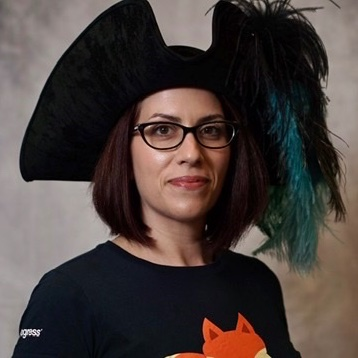

About
Michele "the #CodePirate" Cynowicz has been working in web applications development for nearly 20 years. Originally from New York City, Michele currently works and advocates for remote work in the tech industry from the Tampa Bay Area of Florida. She is a Senior Front-End Engineer, passionate about teaching and mentoring juniors. In her spare time, Michele is a volunteer with the Girl Scouts, a classic RPG gamer and a fitness enthusiast.
Videos
- Successful Remote Work Culture
- (Presented at Connect.tech 2018, Vue Vixens Day 2020, VueNYC meetup #43)
- Shifting to Vue
- (Presented at Google DevFest Florida 2019)
Podcast guest appearances
- CodePrep podcast episode 056: Michele Cynowicz
- Views on Vue podcast episode 065: Redesigning for State Management using VueJS in Rails with Michele Cynowicz
- Views on Vue podcast episode 086: Prototyping and The Design Cycle With Michele Cynowicz
- Thunder Nerds podcast episode 175: Michele Cynowicz, DevFest Florida 2019
- Thunder Nerds podcast episode 204: Michele Cynowicz, VueConf 2019
- Friends that Code podcast episode 12: Why remote work is important for everyone and big hats at meetups with Michele Cynowicz
Blog posts
Other community involvement
- Functional Prototypes and the Design Cycle (Front End Design Meetup 2019)
- Pull Requests and the Developers who love them (Suncoast Developers Conference Summer 2020, VueNYC meetup #46)
- How to be a good mentor (Front-End Foxes training event)
- Running remote workshops with Zoom (Front-End Foxes training event)
- Crash Course: Intro to Open-Sourced Software Contributing (Suncoast Developers Guild meetup, July 2020)
- Vue Vixens Intro to Vue, full-day workshop (Connect.tech 2018, VueConfUS 2019, Suncoast Developers Guild 2019)